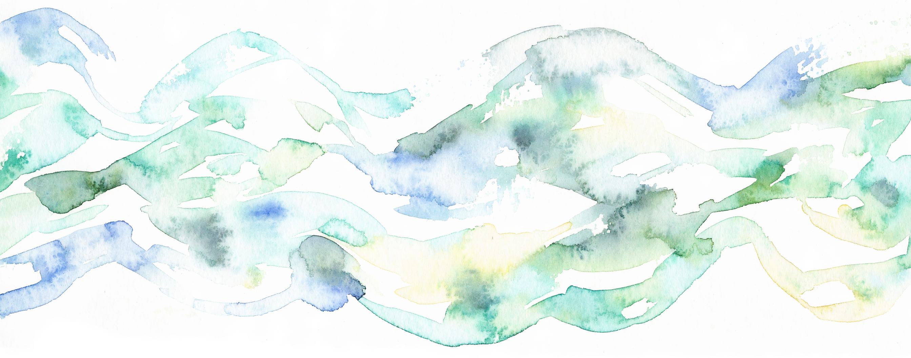
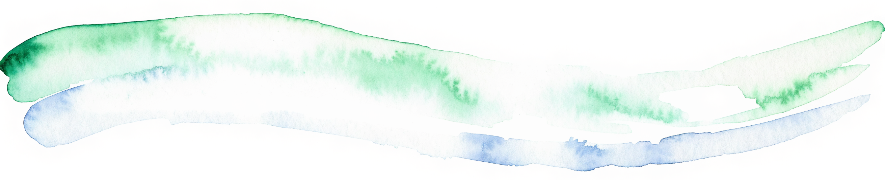
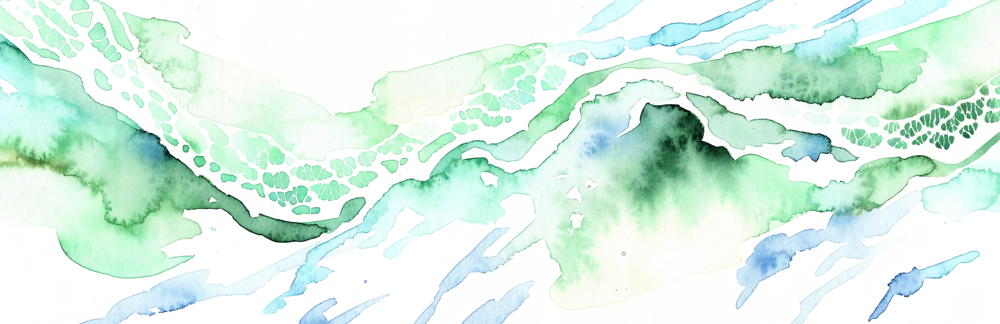
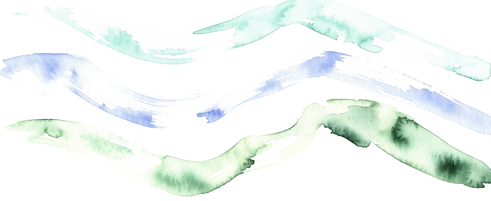
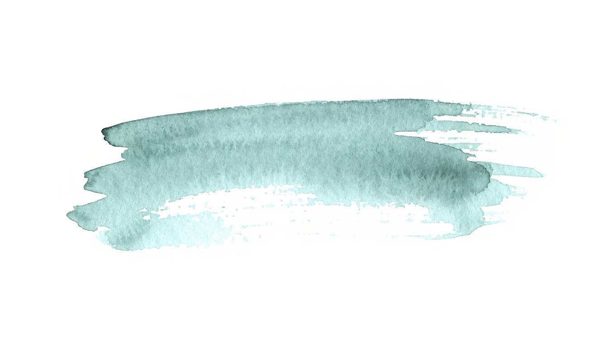
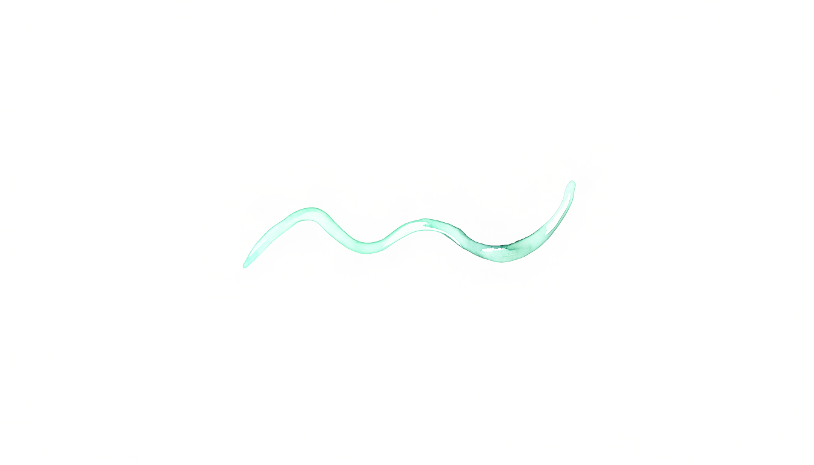

Hero wave band — pick one
Four Higgsfield candidates (Recraft V4.1, palette-locked to the wash tokens), each shown in the real hero context at the strip crop that would ship. The band sits at the hero's bottom seam; content scrolls over shell white below it. Accents at the bottom are for the footer rule + painted details.
Band 1 · «Layered»
Interlocking wave shapes, fullest texture — the most "painted" of the four; risks busy behind nothing, rewards richness.

Jada Kouba · LCMHC · LCPC — Online across Florida & Maine
Clinical counseling from a Biblical worldview
Request a Free Consult

↓ next section begins on clean shell…
Band 2 · «Single Sweep» — Leaf9 pick
One quiet double-stroke swell. The airiest and calmest — closest to the brief's "airy, clean," and it never competes with the headline.
Jada Kouba · LCMHC · LCPC — Online across Florida & Maine
Clinical counseling from a Biblical worldview
Request a Free Consult

↓ next section begins on clean shell…
Band 3 · «Foam Edge»
Lacy foam texture and the deepest greens — the most dramatic and "real tide" of the four; the strongest brand moment, the least quiet.
Jada Kouba · LCMHC · LCPC — Online across Florida & Maine
Clinical counseling from a Biblical worldview
Request a Free Consult

↓ next section begins on clean shell…
Band 4 · «Tide Lines»
Three staggered wave strokes — rhythmic and a little playful; reads most like the logo's own flourish repeated.
Jada Kouba · LCMHC · LCPC — Online across Florida & Maine
Clinical counseling from a Biblical worldview
Request a Free Consult

↓ next section begins on clean shell…
Accent 5 · solid stroke

For painted underlines / section dividers (tinted per use)
Accent 6 · wave squiggle

For the footer rule + small signature marks